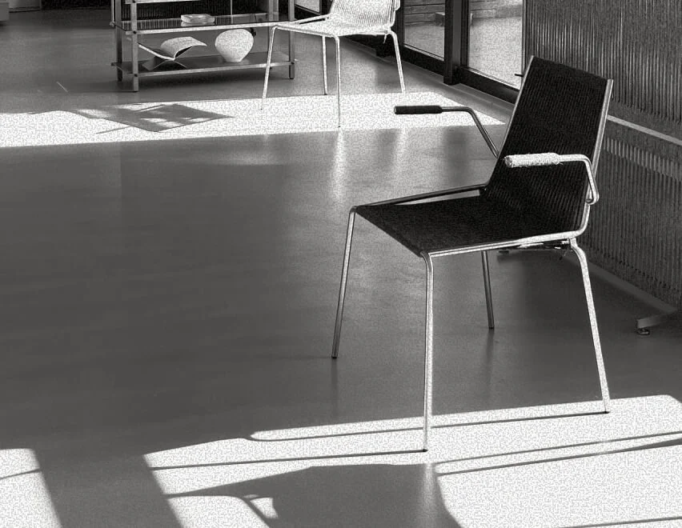
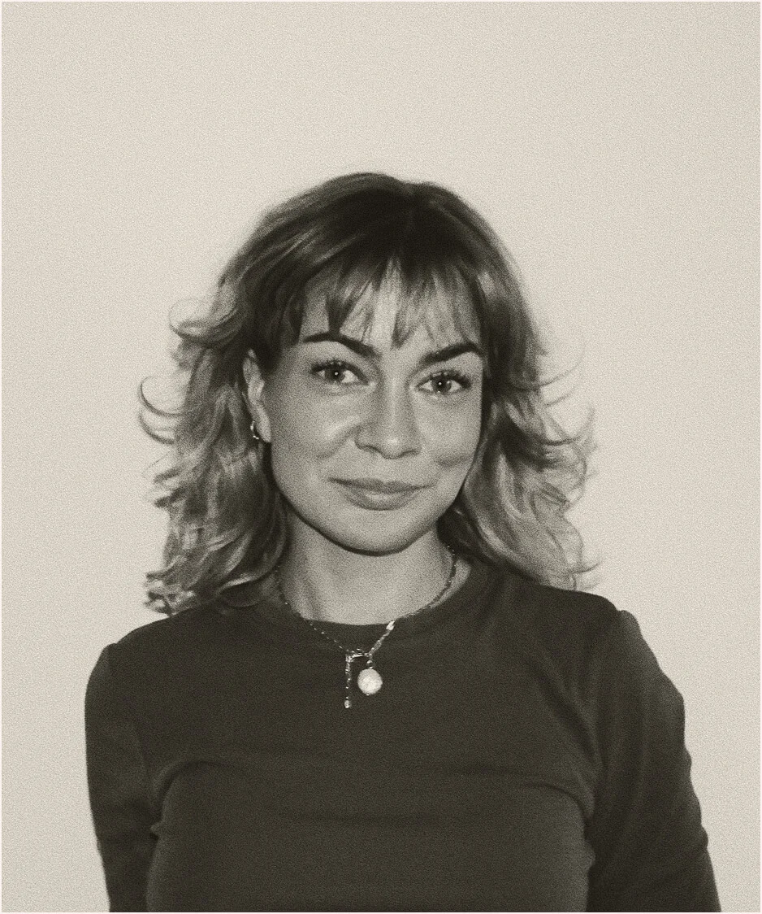
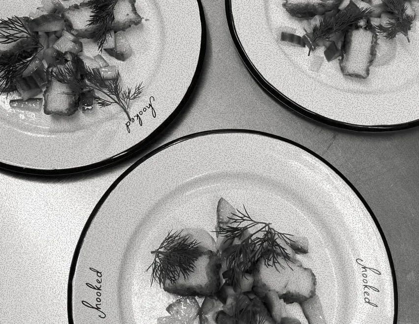
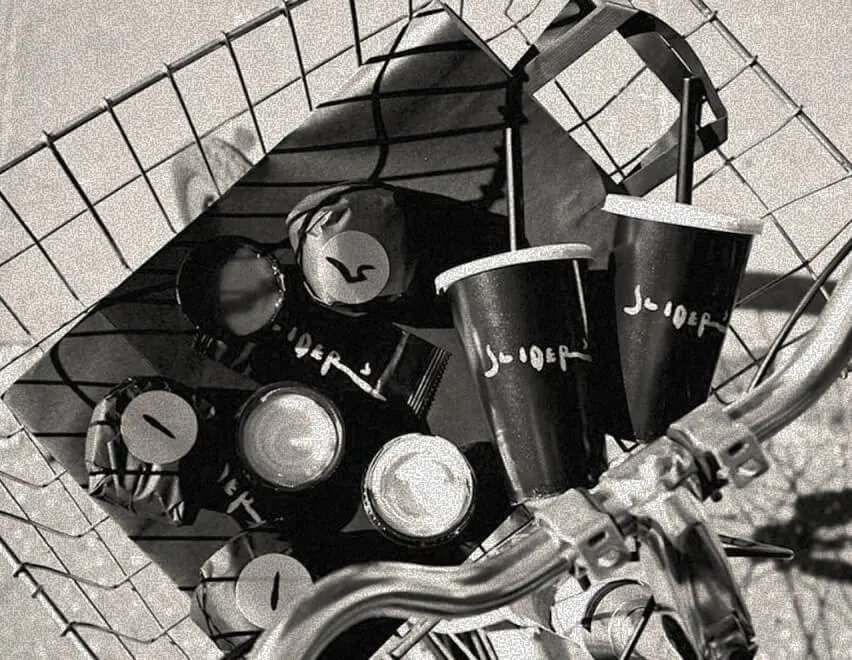
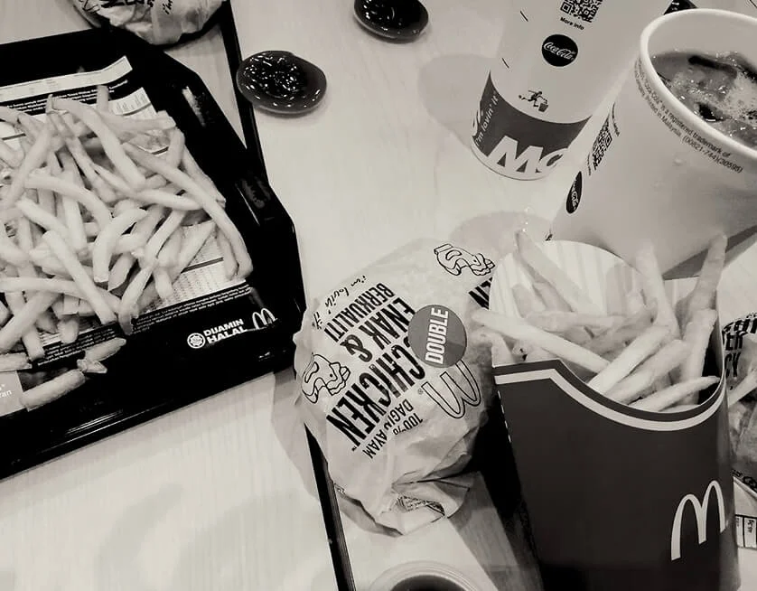

STUDIO ASSISTANT
Thorup Copenhagen | 2020 – Present
- Graphic design and visual content
- Assist with events and creative projects
- Support day-to-day studio operations
- Ad hoc creative and practical tasks
I’m 28 years old and based in Copenhagen, currently studying my 3rd semester of Multimedia Design.
I work across graphic design, visual communication and digital design, with experience in web design and front-end development. I enjoy developing visual concepts and exploring how typography, colour, imagery and interactive elements can come together in digital experiences.
For January 2027, I’m looking for an internship where I’m motivated to contribute, learn and gain more hands-on experience through real projects.

Multimedia
Designer
2025 – Present
Multimediedesign (AP Degree)
Erhvervsakademi
København (EK)
2015 – 2018
Svendborg Gymnasium
English A · Social
Studies A · Physical Education B

Thorup Copenhagen | 2020 – Present

Hooked | 2023 – 2025

Sliders | 2020 – 2023

McDonald’s Svendborg | 2018 – 2020